Chinese painting (left): "In a deep mountain enclave, where pines and cypresses thrive, Amidst swirling clouds and mist, distant rocks and peaks arrive. A dwelling stands in solitude, with a simple architectural grace, Beyond bamboo fences, children play in a joyous embrace. Beneath the trees, two figures converse with laughter and delight, Together forming a scene of tranquil seclusion, warm and bright."
Method
A framework to generate nontypical aspect-ratio images from storytelling text with style and layout controls.
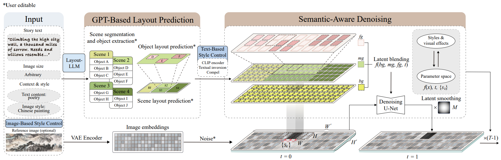Results
Qualitative Comparison of Our Method with Other Baselines
The results demonstrate the high versatility and core advantages of MagicScroll. (a) Style mimicry in specific historical contexts. (b) Semantic layout planning and control. (c) Content richness and diversity.
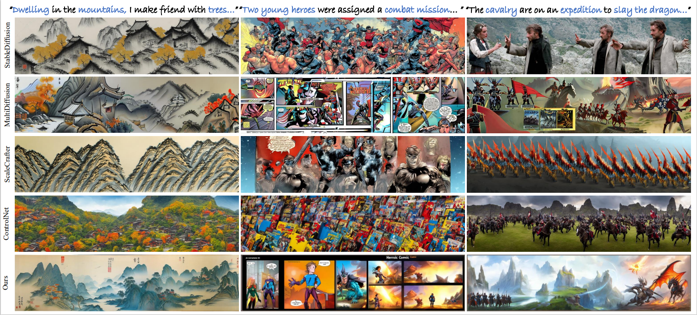
Generation in Different Aspect Ratios
By providing control over style, concept, and layout at all foreground, midground, and background levels, our framework can meet the needs of visual storytelling content generation in various scenarios.
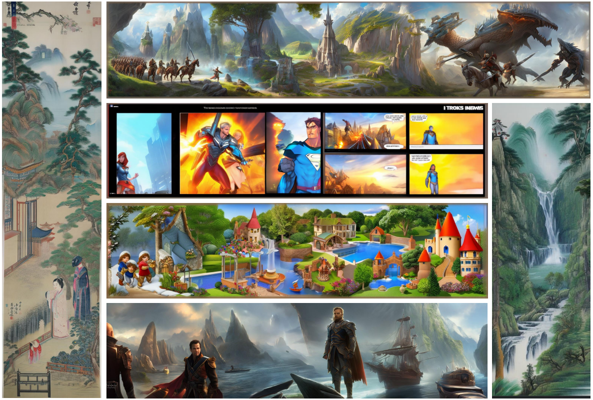
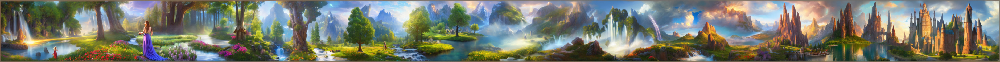
From left to right: “In a serene garden, lakes and waterfalls flow gently as two girls, dressed in long skirts, run through it. The flowing water travels through dense forests, reaching vast meadows covered with green trees. Distant mountain peaks come into view, and amidst the ever-changing clouds, the mountains and waters harmonize. In this fantastical world, we gradually witness a series of towering castles standing in the distant lakeside, narrating an ancient story under the blue sky.”
More Results Generated by MagicScroll
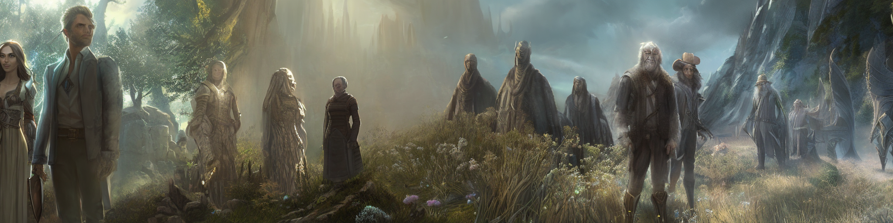
 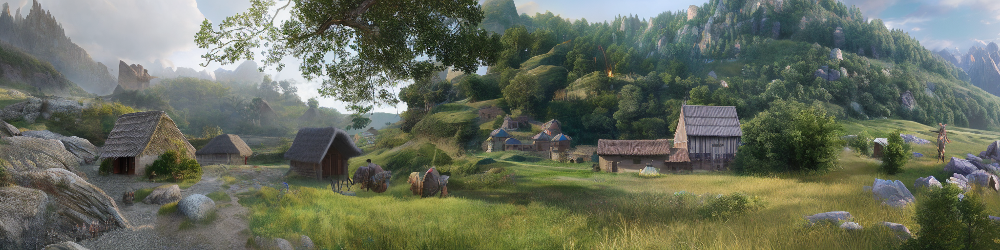
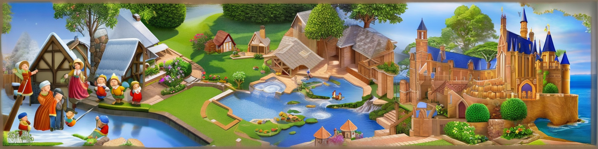
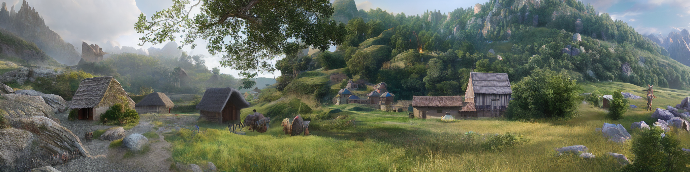
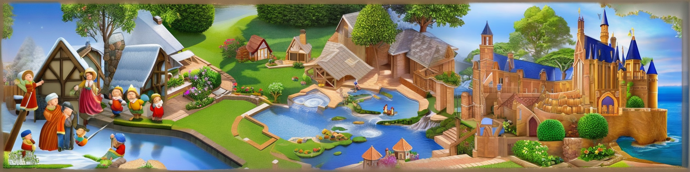
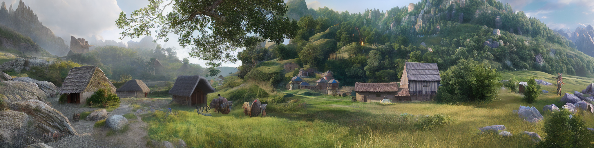
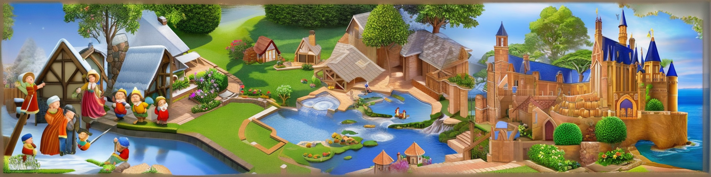
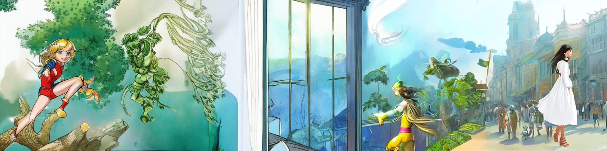
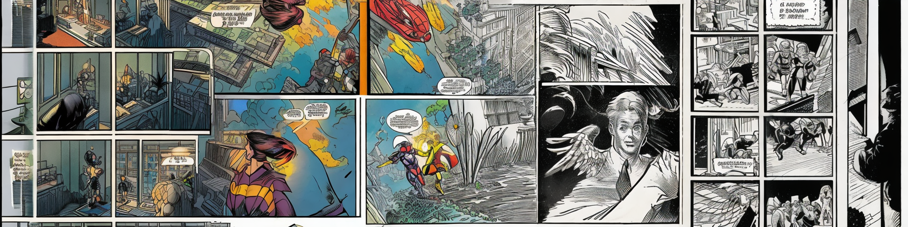
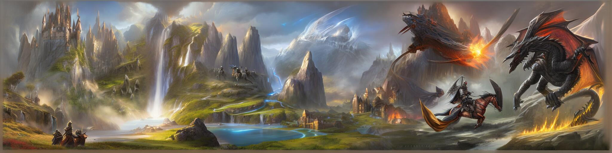


.png) 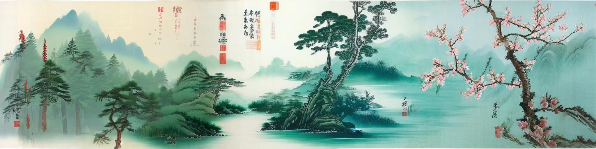
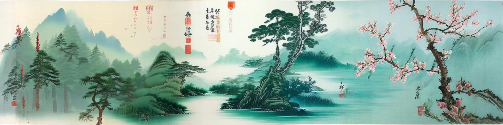


Videos Synthsized from MagicScroll Outputs
Our results can be used with an image-to-video method (e.g., Runway) to achieve impressive dynamics, better fit for industrial demands and creative needs.